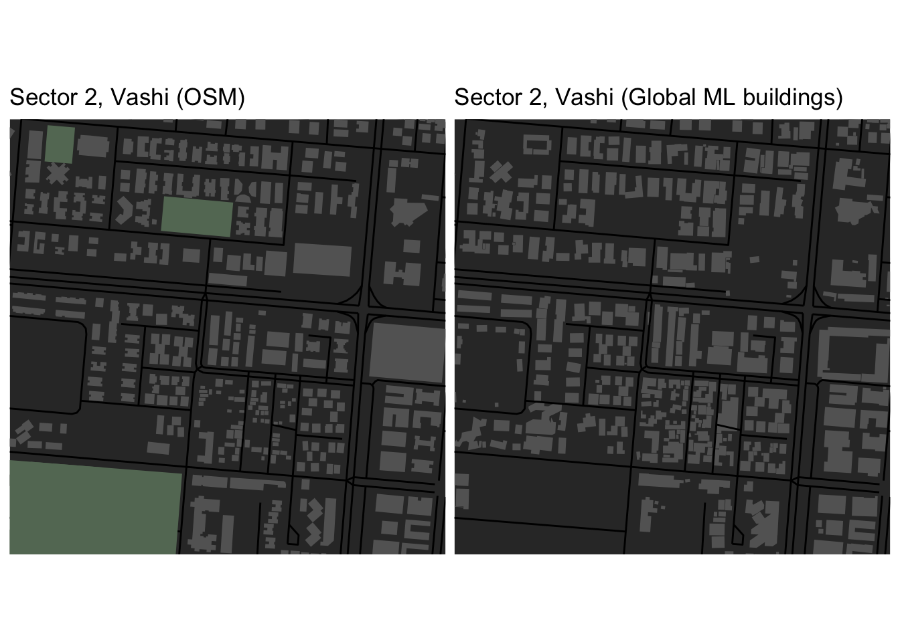
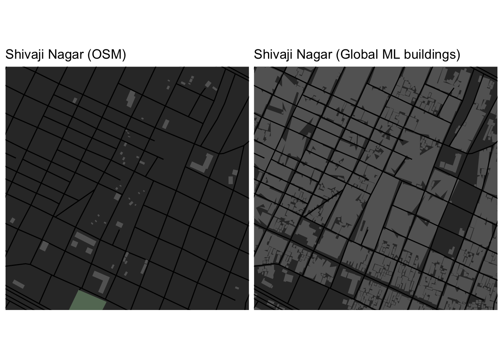

# load the Global ML footprints for approx Mumbai suburban and metropolitan region bbox
global_ml <- sf::st_read("~/Documents/global-ml-footprints/part-00055-2cb4a5ad-6652-48b0-a336-f09518f4c9e5.c000.geojson")
# need this for the bbox cropping to work
sf_use_s2(FALSE)OSM issues in Mumbai
data-science
urban
india
osm
bbox <- get_centroid_bounding_box(
c("lat" = 19.07403, "lng" = 72.99571),
distance = 500,
dist.unit = "m") %>%
get_bbox()
structs <- c ("highway", "building", "park", "landuse", "leisure")
structures <- osm_structures (structures = structs, col_scheme = "dark")
structures$value [4] <- "recreation_ground"
structures$cols[4] <- "#647864FF"
structures$value [5] <- "sports_centre"
structures$cols[5] <- "#647864FF"
navi_mumbai_s2 <- make_osm_map (structures = structures, bbox = bbox)
p2 <- navi_mumbai_s2$map + labs(title = "Sector 2, Vashi (OSM)")
## Global ML comparison
streets <- extract_osm_objects(bbox, key = "highway")
nm_bldgs <- st_crop(global_ml, xmin = bbox[1], ymin = bbox[2], xmax = bbox[3], ymax = bbox[4]) %>% st_cast("POLYGON")
nm_map <- osm_basemap(bbox = bbox, bg = "gray20")
nm_map <- add_osm_objects(nm_map, obj = nm_bldgs, col = "#646464FF") + labs(title = "Sector 2, Vashi (Global ML buildings)")
nm_map <- add_osm_objects(nm_map, streets, col = "#000000FF")(p2 + theme(plot.margin = unit(c(0,5,0,0), "pt"))) +
nm_map
bbox <- get_centroid_bounding_box(
c("lat" = 19.063637617804797, "lng" = 72.92389549177575),
distance = 500,
dist.unit = "m") %>%
get_bbox()
structs <- c ("highway", "building", "park", "landuse", "leisure")
structures <- osm_structures (structures = structs, col_scheme = "dark")
structures$value [4] <- "recreation_ground"
structures$cols[4] <- "#647864FF"
structures$value [5] <- "sports_centre"
structures$cols[5] <- "#647864FF"
shivaji_nagar <- make_osm_map (structures = structures, bbox = bbox)
p5 <- shivaji_nagar$map + labs(title = "Shivaji Nagar (OSM)")
## Global ML comparison
streets <- extract_osm_objects(bbox, key = "highway")
sn_bldgs <- st_crop(global_ml, xmin = bbox[1], ymin = bbox[2], xmax = bbox[3], ymax = bbox[4]) %>% st_cast("POLYGON")
sn_map <- osm_basemap(bbox = bbox, bg = "gray20")
sn_map <- add_osm_objects(sn_map, obj = sn_bldgs, col = "#646464FF")
sn_map <- add_osm_objects(sn_map, streets, col = "#000000FF") + labs(title = "Shivaji Nagar (Global ML buildings)")(p5 + theme(plot.margin = unit(c(0,5,0,0), "pt"))) +
sn_map